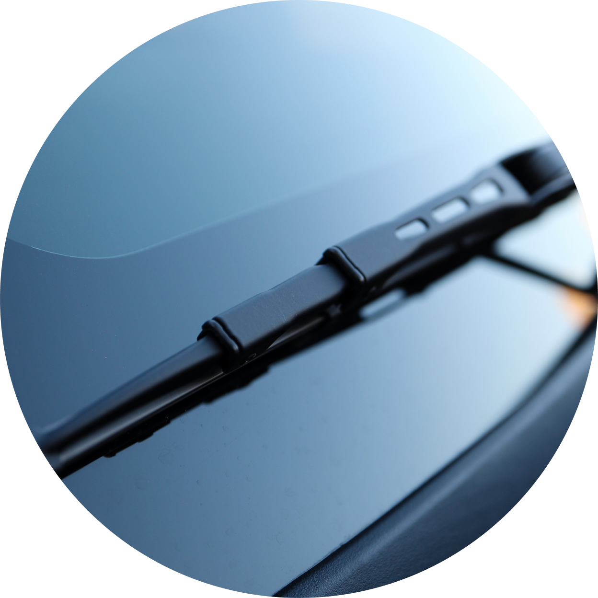

에어공기청정기


보다 더 스마트한 일상
LG ThinQ의 시작

보다 더 스마트한 일상, LG ThinQ
씽큐는 사람과 가전을 AI 기술로 연결하여 더 편리하고 놀라운 일상을 만드는 LG전자의 스마트 홈 플랫폼입니다.
* 본 콘텐츠는 ThinQ 앱의 콘텐츠입니다.
황사는 인체에도 유해하지만 자동차 수명에도 영향을 줄 수 있대요!
황사에 장시간 노출된 차량의 필터는 여과 기능이 빠르게 저하돼요. 엔진에 황사가 들어가면
연비도 나빠지고 수명도 줄어들죠. 황사로부터 소중한 내 차를 보호하는 방법, 꼭 알아둬야겠죠?
POINT 01
황사를 피해 주차하기
당연히 가장 효율적인 방법은 실내에 주차하는 거죠. 만약 실내 주차가 불가능한 상황이라면 황사철엔 번거롭더라도 자동차 커버를 씌워주세요. 이것마저 불가능하다면 자동차 엔진의 마스크인 에어필터와 실내 공기질에 영향을 주는 에어컨 필터를 자주 교환해 주세요.
POINT 02
와이퍼 작동 전 확인!
앞 유리에 내려앉은 황사, 바로 와이퍼로 닦으셨나요? 황사의 미세한 알갱이가 유리에 스크래치를 낼 수 있어요. 부드러운 소재의 먼지떨이로 황사 먼지를 먼저 제거하고 워셔액이 충분한 지 점검한 후, 와이퍼를 작동시켜 주세요.

POINT 03
왁스 코팅하기
금세 내려앉은 황사가 세차도 미루게 만들죠? 하지만 외부에 쌓인 황사는 차에게도 사람에게도 안 좋으니 자주 세차해 주세요. 자동차 내·외부의 청소를 마치고 차량의 물기를 제거한 후 왁스로 코팅을 하면 미세먼지나 황사가 달라붙는 것을 방지할 수 있어요.
POINT 04
에어 필터 교체하기
에어 필터는 주행거리 5,000 ~ 8,000㎞마다 교체해 주세요. 청소기 등으로 필터의 먼지를 제거하면 필터의 수명을 조금 더 늘릴 수 있어요.
POINT 05
에어컨 필터 교체하기
케빈 필터라고도 부르는 에어컨 필터는 6개월마다 교체하는 것을 원칙으로 하되 황사 철을 지내고 나면 필터 상태를 확인해 보고 교체를 결정하는 것이 좋아요.
POINT 07
공기청정기 활용하기
깨끗한 실내공기를 위해 차량 내에 공기청정기를 활용하세요.
초미세먼지를 99.9% 걸러주고, 필터에 모인 바이러스와 박테리아도 99.9% 제거해 주는 LG 퓨리케어 미니 공기청정기를 추천해요.
LG 퓨리케어 미니 공기청정기
360도 회전하는 상단부스터가 운전석, 조수석, 2열 어디든 원하는 방향으로 깨끗한 공기를 전달해 줘요.
초미세먼지를 99.9% 걸러주고, 필터에 모인 바이러스와 박테리아도 99.9% 제거해 주는 LG 퓨리케어 미니 공기청정기를 추천해요.
바이러스와 유해균을 99.9% 제거해 주는 항균 필터와 박테리아 3종을 99.99% 제거해 주는 UV-C LED가 있어서 항상 청결한 실내 공기를 만들어 주죠.
자동모드를 사용하면 PM1.0 센서가 감지한 먼지 농도에 따라 1~7단계로 풍량도 자동 조절해 줘요.
취향에 따라 색상을 선택할 수도 있어요. 특히 골드 색상 모델은 배터리의 유/무도 선택할 수 있죠.
배터리가 있는 모델은 우리가 흔히 사용하는 c-type 충전기로 충전할 수 있고, LG ‘PuriCare Mini’ 또는 ‘퓨리케어 미니’ 전용 앱과 연동하면 케이블과 연결하여 자동차 시동을 켜면 공기청정기가 자동으로 작동되도록 설정할 수 있어 편리해요.
* 단, 상시 전원이 공급되는 단자에서는 사용 불가
[항균 99.9%]
· 시험 일시 : 2020년 4월 3일
· 시험 기관 : 한국화학융합시험연구원
· 시험 대상 : 항균필터 / 항균 미처리 필터(대조군)
· 시험 조건 : 0.4g, (37 ± 1)℃, (18 ± 1) h
· 시험 방법 : KS K 0693 : 2016 감소율(%) : 시험편과 대조 시험 편의 18시간 배양 후 생균수 비교
· 시험 균주 : Staphylococcus aureus ATCC 6538 (황색 포도상 구균) / Klebsiella pneumoniae ATCC 4352 (폐렴간균) / Escherichia coli ATCC 25922(대장균)
· 시험 결과 : 항균 미처리 필터 대조군 결과 대비 항균 시험(S. aureus) 99.9% 이상, 항균 시험(K. pneumoniae) 99.9% 이상, 항균 시험(E.coli) 99.9%
· 필터에 포집된 공기에 한합니다.
· 실험실 측정 기준으로 실 사용 환경에서는 달라질 수 있습니다.
· 실험실 결과는 제품 초기 성능을 측정한 결과이며, 사용 시간에 따라 달라질 수 있습니다.
[항바이러스 99.9%]
· 시험 일시 : 2020년 3월 1일 ~ 2020년 3월 31일
· 시험 기관 : 서울대학교 보건대학원
· 시험 대상 : 항균필터 / 표준 백포(PET 부직포) 성능 비교(대조군)
· 시험 조건 : 23.1 ~ 24.8℃, 습도 20~22%
· 시험 방법 : ISO 20743 감소율(%) : 시험 편의 0시간(초기 농도)과 18시간 배양 후 바이러스 감소율 비교
· 시험 균주 : 쥐 코로나바이러스 (mouse hepatitis virus) ※ COVID19와 다른 균주임
· 시험 결과 : 표준 백포 대조군 초기 대비 99.9% 바이러스 감소
· 실험실에서 필터에 포집된 바이러스/유해균의 측정치를 시험한 결과로 실제 사용 환경과는 다를 수 있습니다.
[박테리아 3종 제거]
· 시험 일시 : 2021년 3월
· 시험 환경 : 온도 (25±2)℃, 습도 (50±10)%
· 시험 방법 : 시험균 액 1/100 희석, 5mL 멤브레인필터(직경 47mm)에 여과 후 필터 대표 위치 2곳에 부착 후 UV-C 30분 조사하여 대조군 대비 시험 군의 생균수 저감률 평가
· 시험 균주 : Staphylococcus aureus ATCC 6538(황색포도상구균), Klebsiella pneumoniae ATCC 4352(폐렴간균), Staphylococcus epidermidis ATCC 12228(표피포도상구균)
· 시험 결과 : 살균 시험(S. aureus) 99.99%, 살균 시험(K. pneumoniae) 99.99%, 살균 시험(S. epidermidis) 99.99%
· UVnano 살균 효율은 UV-C LED 빛이 필터에 닿는 면적에 한합니다. 99.99% 살균 효율은 필터 대표 위치 2곳에 대한 평균 값이며, 균을 접종하여 30분 광조사 후 미처리 군과의 균 수를 비교하여 계산하였습니다.
· 본 시험 결과는 위치, 수명에 따른 광출력 감소 등 실 사용 환경에 따라 다를 수 있습니다.
작은 실천부터 실행하여, 내가 아끼는 자동차와 나의 건강을 잘 지켜주세요.


LG ThinQ
ThinQ 하나로 더 좋아지는 일상
일상을 더 편하고 스마트하게 만들어주는 씽큐 앱을 지금 바로 만나보세요.
- #공기청정기
- #공기청정기활용
- #황사
- #황사철
- #차량관리
- #미니공기청정기
- #황사철차량관리법